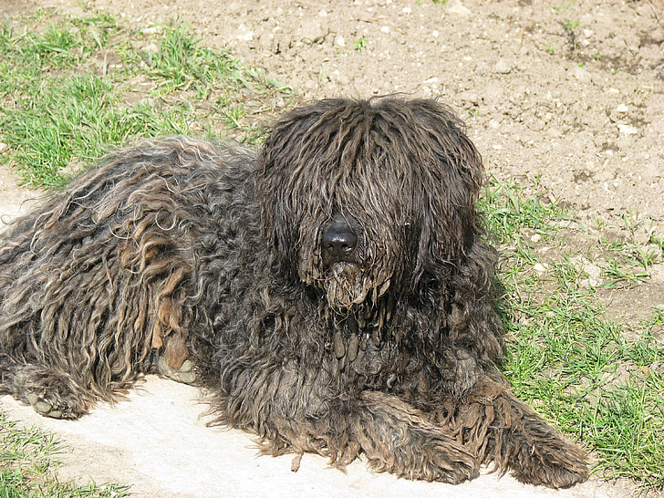

| Kutya fajták | Erdélyi kopó | Komondor | Kuvasz | Magyar vizsla | Mudi | Puli | Pumi |
|---|

A puli egyike a kilenc magyar kutyafajtának, és világszerte a legismertebb terelőkutyafajta közülük. Mintegy száz éve szervezetten tenyésztik.
Ősei a pásztoremberek nélkülözhetetlen segítői voltak. Akár egy marhát is adtak egy-egy híres terelő kölykéért. A külsejével nem törődtek. A puli fennmaradása a szorgalmának, találékonyságának, intelligenciájának tudható be. A zord körülmények, a kemény munka edzetté, ellenállóvá és igénytelenné tették a fajtát, ezek a vonások pedig a mai napig jellemzőek a pulira.
A puli legfeltűnőbb sajátossága a páratlan szőrköntöse, amihez hasonló csak a szintén magyar puminak van. Szőrszíne lehet fekete, fehér, fakó és a szürke különféle árnyalatai. A szőre lehet szalagos, zsinóros jellegű, nemezes, gubancos, nyílt, sima, selymes. Dús szőrzettel borított gömbölyű feje alig különül el testétől, mert nyaka a hosszú szőrzet miatt szinte nem is látható. Arcorri része rövidebb, mint az agykoponyai része, orrháta egyenes, orrtükre viszonylag nagy, fekete. Állkapcsa fejlett, fogazata erőteljes, metszőfogai ollósan záródnak. Szeme sötétbarna, értelmes tekintetű. Füle széles, lekerekedő, lelógó, szinte észre sem vehető. Háta egyenes, feszes, középhosszú. Ágyéka rövid, egyenes, rendkívül feszes. Farka az ágyéktájékra visszakunkorodik; hosszú szőrzet borítja, ezért szinte beleolvad a far szőrzetébe. Mellkasa hosszú és mély. Hasa enyhén felhúzott. Mellső végtagjai szikár izomzatúak, egyenesek, párhuzamosak. A hátulsó végtagok is jó izomzatúak. A csánk szikár. Mancsa erős, kerekded, karmai feketék vagy palaszürkék.
Színei: